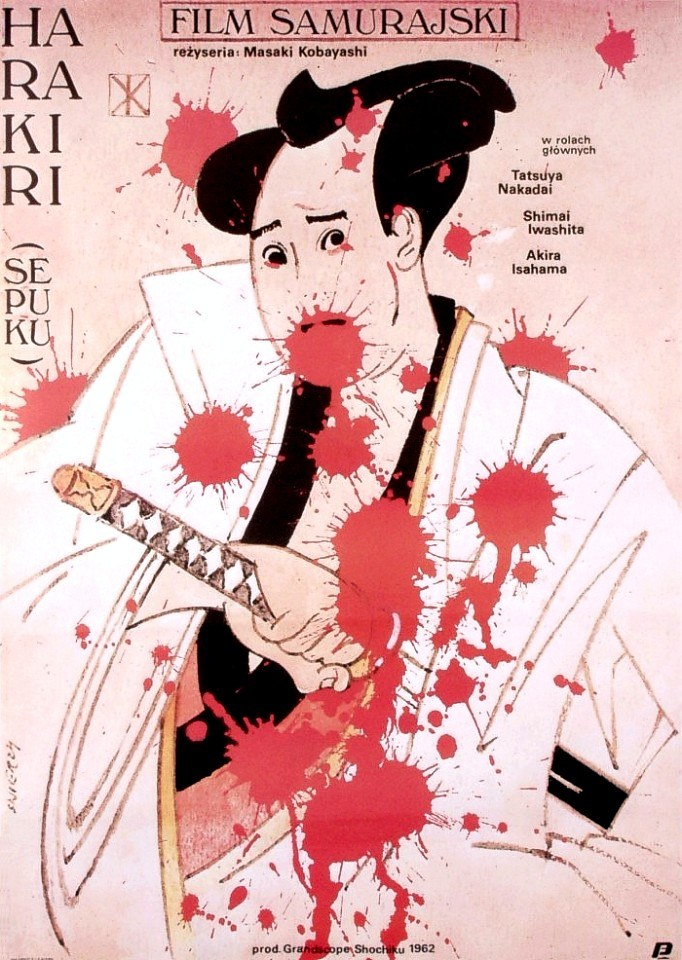
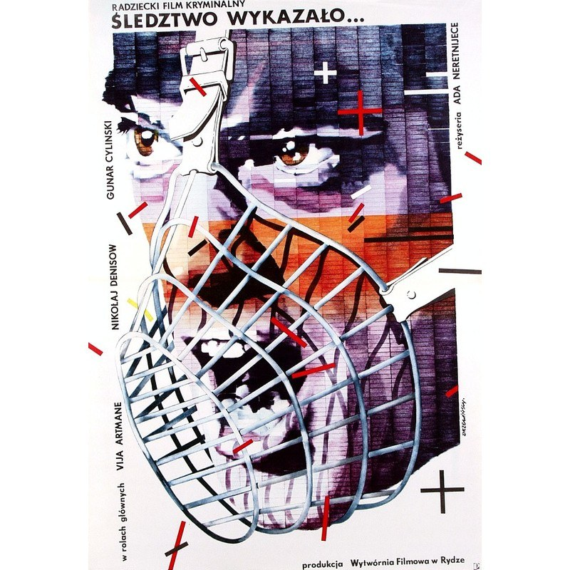
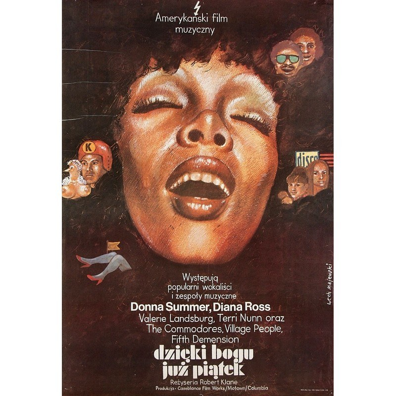
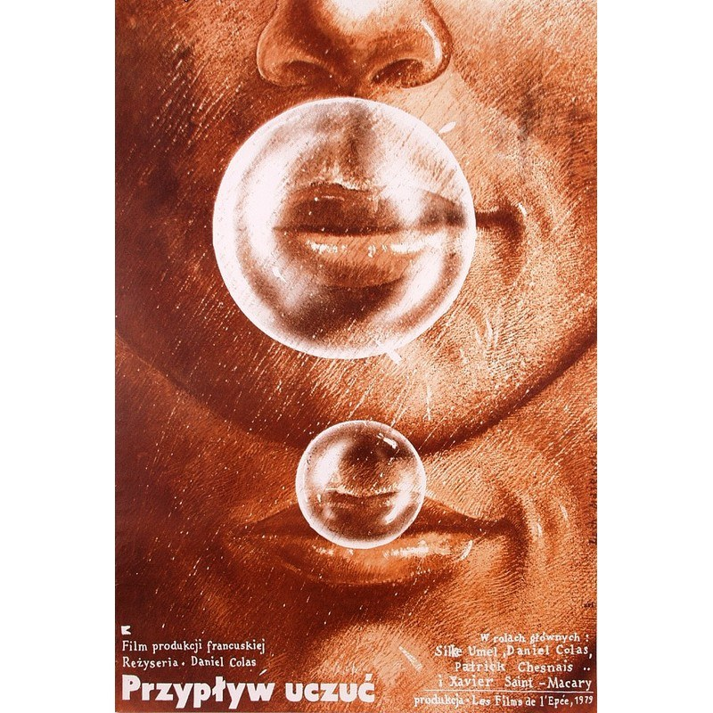
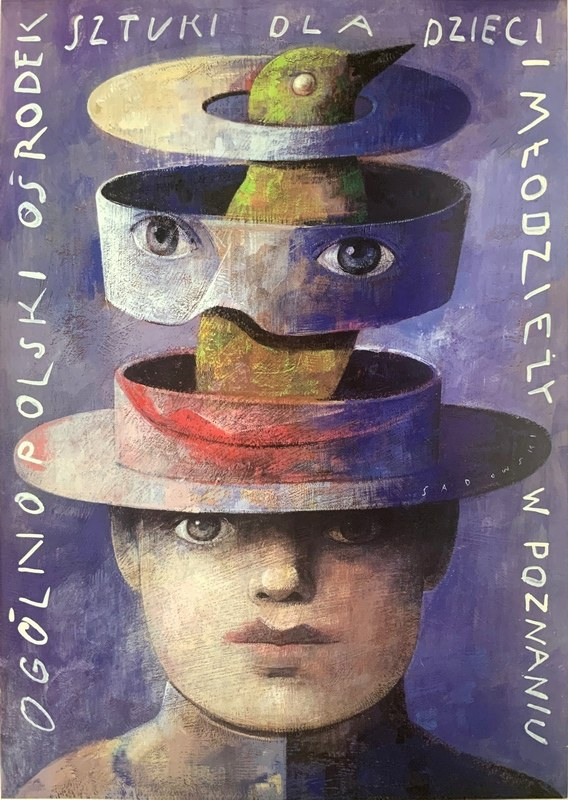
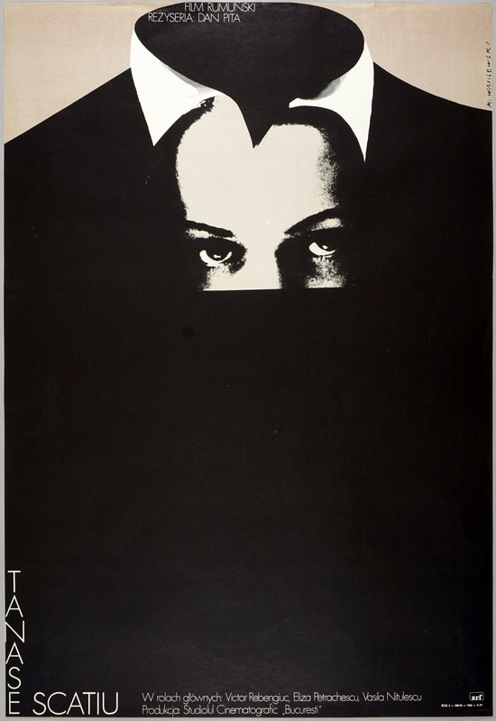
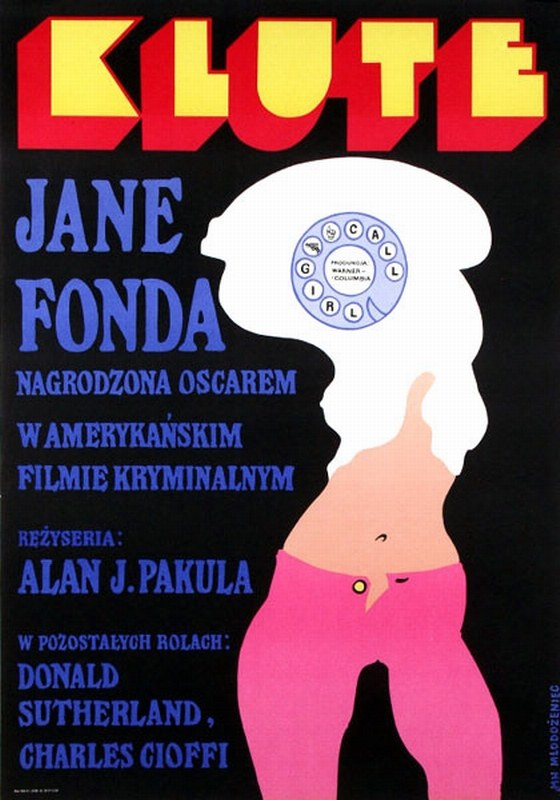
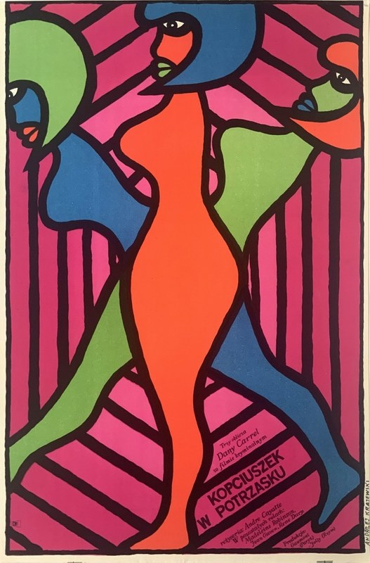
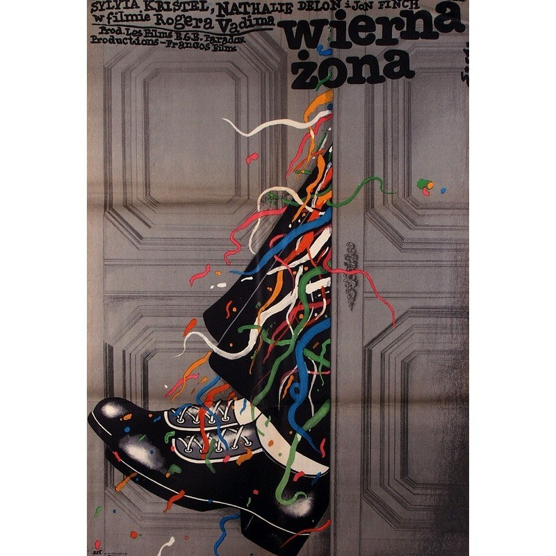
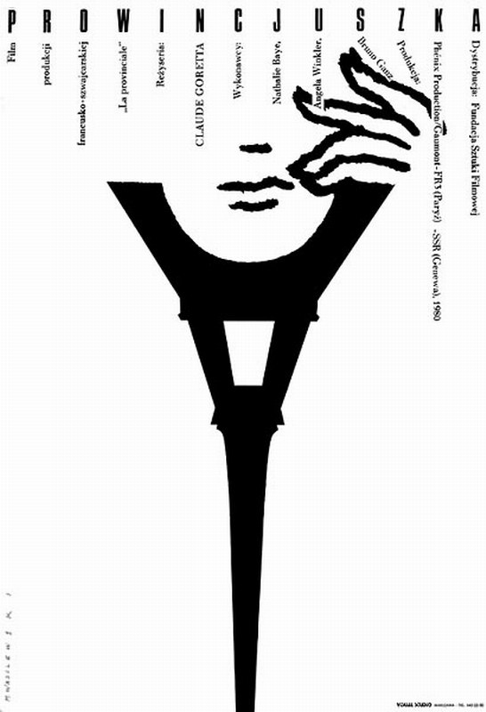

CRVI000250Waldemar Swierzy - Harakiri
Film Poster Designed By Waldemar Swierzy · 1987 · 1987
Film Poster Designed By Waldemar Swierzy · 1987 · 1987

CRVI000290Jan Sawka - Cyrk — Pyramid of Acrobats
Polish CYRK circus poster · acrobats on unicycles
Polish CYRK circus poster · acrobats on unicycles

CRVI000266Roman Cieślewicz - J.M.K. Hellcat
Theatre Poster · 1979 · 1979
Theatre Poster · 1979 · 1979

CRVI000253Lex Drewinski - Investigation Proved
Film Poster Designed By Lex Drewinski · 1983 · 1983
Film Poster Designed By Lex Drewinski · 1983 · 1983

CRVI000256Wiesław Wałkuski - The Idiots
Film Poster Designed By Wiesław Wałkuski · 1999 · 1999
Film Poster Designed By Wiesław Wałkuski · 1999 · 1999

CRVI000263Roman Cieślewicz - Polish Fashion
Advertising Poster · 1972 · 1972
Advertising Poster · 1972 · 1972

CRVI000257Lech Majewski - Thank God It's Friday
Film Poster Designed By Lech Majewski · 1979 · 1979
Film Poster Designed By Lech Majewski · 1979 · 1979

CRVI000252Lech Majewski - Ras le cœur
Film Poster Designed By Lech Majewski · 1980 · 1980
Film Poster Designed By Lech Majewski · 1980 · 1980

CRVI000279Wiktor Sadowski - Candide, or Optimism
Theatre Poster · 1986 · 1986
Theatre Poster · 1986 · 1986

CRVI000259Ryszard Kaja - Dachshund in Films
Poster
Poster

CRVI000268Robert Czerniawski - Boris Godunov
Theatre Poster · 2008 · 2008
Theatre Poster · 2008 · 2008

CRVI000278Wiktor Sadowski - Art Center for Children and Youth
Event Poster · 1996 · 1996
Event Poster · 1996 · 1996

CRVI000281Mieczysław Wasilewski - A Summer Tale
Film Poster · 1978 · 1978
Film Poster · 1978 · 1978

CRVI000264Enchantment of story-telling – Roman Cieślewicz - Affabulazione
Theatre Poster · 1984 · 1984
Theatre Poster · 1984 · 1984

CRVI000265Roman Cieślewicz - Theater Wspolczesny in Wroclaw Invites
Theatre Poster · 1975 · 1975
Theatre Poster · 1975 · 1975

CRVI000269Robert Czerniawski - Man Tanker Sitt
Film Poster · 2010 · 2010
Film Poster · 2010 · 2010

CRVI000292Jan Sawka - Operetka (The Operetta)
Jan Sawka · Witold Gombrowicz, Teatr STU
Jan Sawka · Witold Gombrowicz, Teatr STU

CRVI000270Robert Czerniawski - Gospel
Theatre Poster · 2009 · 2009
Theatre Poster · 2009 · 2009

CRVI000249Bozena Jankowska - Dersu Uzala
Film Poster Designed By Bozena Jankowska · 1976 · 1976
Film Poster Designed By Bozena Jankowska · 1976 · 1976

CRVI000261Wiktor Gorka - The Great Escape
Film Poster Designed By Wiktor Gorka · 2018 · 2018
Film Poster Designed By Wiktor Gorka · 2018 · 2018

CRVI000254Jerzy Flisak - The Audience
Film Poster Designed By Jerzy Flisak · 1973 · 1973
Film Poster Designed By Jerzy Flisak · 1973 · 1973

CRVI000271Robert Czerniawski - Lulu on the Bridge
Theatre Poster · 2008 · 2008
Theatre Poster · 2008 · 2008

CRVI000262Jakub Kamiński - Wniebowzieci
Film Poster
Film Poster

CRVI000276Andrzej Pągowski - Polish Film Ltd.
Film Poster · 1989 · 1989
Film Poster · 1989 · 1989

CRVI000258Maciej Zbikowski - The Man Whose Price Rose
Film Poster Designed By Maciej Zbikowski · 1973 · 1973
Film Poster Designed By Maciej Zbikowski · 1973 · 1973

CRVI000274Jan Młodożeniec - Klute
Film Poster · 1973 · 1973
Film Poster · 1973 · 1973

CRVI000272Andrzej Krajewski - A Trap Cinderella
Film Poster · 1967 · 1967
Film Poster · 1967 · 1967

CRVI000260Wiktor Górka - Cabaret
Poster · 2017 · 2017
Poster · 2017 · 2017

CRVI000277Andrzej Pągowski - State of Fear
Film Poster · 1989 · 1989
Film Poster · 1989 · 1989

CRVI000275Andrzej Pągowski - 1901 Children on Strike
Film Poster · 1980 · 1980
Film Poster · 1980 · 1980

CRVI000251Wiesław Wałkuski - Scruple
Film Poster Designed By Wiesław Wałkuski · 2000 · 2000
Film Poster Designed By Wiesław Wałkuski · 2000 · 2000

CRVI000267Roman Cieślewicz - The Danton Case
Theatre Poster · 1975 · 1975
Theatre Poster · 1975 · 1975

CRVI000273Andrzej Krauze - Camera Buff
Film Poster · 1979 · 1979
Film Poster · 1979 · 1979

CRVI000255Romuald Socha - A Faithful Woman
Film Poster Designed By Romuald Socha · 1978 · 1978
Film Poster Designed By Romuald Socha · 1978 · 1978

CRVI000280Mieczysław Wasilewski - La Provincjale; The Girl from Lorraine
Film Poster · 1991 · 1991
Film Poster · 1991 · 1991